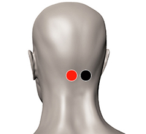

Discinesia
Pares
cerebelo - cerebelo
ciático - ciático

Generalidades:
Discinesia consiste en un movimiento involuntario de algún músculo, lo cual puede deberse a algún trastorno del aparato nervioso, por estrés, por falta de nutrientes (vitaminas del complejo B) o incluso ser un síntoma de la enfermedad de Parkinson. Probar los pares que presentamos, entre otros.
Este padecimiento es más frecuente en personas de la tercera edad y por lo regular incluye músculos de la cara y mandíbula (trismo).
Se puede probar el par especial Chapingo o también aplicar pares según la zona afectada como el ciático-ciatico en caso que los movimientos se presenten en las piernas.
La Discinesia Tardía se puede presentar después de algunas semanas o meses de ingerir algunos tipos de antipsicóticos o neurolépticos como:
Los nutrientes que pueden complementar el tratamiento son: vitamina B6 (piridoxina), amonioácidos de cadena ramificada y/o melatonina.